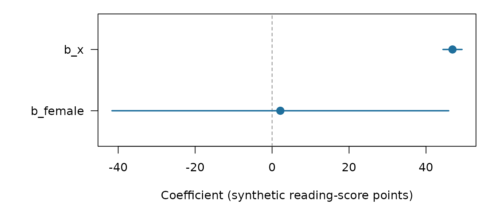

A2: The end-to-end workflow — design, target, fit, report
JoonHo Lee
2026-08-14
Source:vignettes/a2-the-workflow.Rmd
a2-the-workflow.RmdAbstract
The full pipeline on synthetic data, end to end. You declare a
plausible-value design with pv_design(), assemble the
external fixed-effect target with pv_brr_target(),
fit with pv_fit(method = "stack_direct"), and report
on the bundled pisa_tiny fixture. A conceptual sketch
shows how the same call shape reaches a live Bayesian backend on
real data, and the vignette explains why reportable fits require
center = "target".
1. The workflow at a glance
Vignette A1 handed you a fit that had already been run and showed you how to read it. This vignette builds that fit from scratch. The pipeline is four stages, and each stage is exactly one function:
| Stage | What it produces | Function |
|---|---|---|
| 1. Declare the design | a pvstackr_design recording PVs, weights, replicate
weights, Fay \(k\)
|
pv_design() |
| 2. Assemble the target | a pvstackr_brr_target — the external Rubin / BRR–Fay
variance target |
pv_brr_target() |
| 3. Fit | a pvstackr_fit from one stacked,
calibrated model |
pv_fit(method = "stack_direct") |
| 4. Read / report | the reportable estimate table and diagnostics |
get_estimates() / summary()
|
The first two stages are pure bookkeeping and run live here. The third needs a modelling backend, so on this synthetic fixture we load a cached fit and show the live call only by its shape (Section 4); Section 7 sketches how that shape reaches a real backend, and vignette A5 covers genuine PISA files.
Everything below runs on the package’s bundled
synthetic pisa_tiny fixture, so the whole
article is offline and deterministic. Two scope reminders carried over
from A1, because they govern what you may report:
- Fixed effects only. The package calibrates and reports the fixed-effect block \(\beta_{\text{FE}}\) (intercept and slopes). Variance components are estimated but not calibrated and are not part of the reportable output.
-
Coverage lives on one path. A row’s interval is
coverage-claimable only under
stack_directbacked by an external design-based BRR-Fay target with Barnard-Rubin degrees of freedom. The bundled cached fit uses classic Rubin degrees of freedom, so its intervals are honestly descriptive — a faithful demonstration of the object surface, not a coverage-claimable result.
2. Declare the design — pv_design()
The design object records what your data are — which columns hold plausible values, the final survey weight, the BRR replicate weights, and the Fay coefficient — without running a model or touching the response. Load the fixture and declare it:
pisa_tiny <- read.csv(
system.file("extdata", "pisa_tiny.csv", package = "pvstackr")
)
design <- pv_design(
pisa_tiny,
formula = OUTCOME ~ x + female, # OUTCOME is a placeholder (see below)
pv_suffix = "READ", # matches PV1READ / PV2READ
expected_M = 2L, # assert exactly 2 plausible values
expected_R = 4L, # assert exactly 4 replicate weights
id_cols = "CNTSTUID" # column(s) that identify a unique row
)
design
#> pvstackr design
#> rows: 12
#> formula: OUTCOME ~ x + female
#> plausible values: 2
#> final weight: W_FSTUWT
#> replicate weights: 4
#> fay_k: 0.5
#> design hash: fa78c04bThe compact print confirms what was detected: 12 rows, the formula
OUTCOME ~ x + female, \(M =
2\) plausible values, the final weight W_FSTUWT,
\(R = 4\) replicate weights, the Fay
coefficient fay_k = 0.5, and a stable content hash
(fa78c04b) you can use to detect silent design changes.
Three points about the call shape:
-
OUTCOMEis a placeholder, not a column. You write the model once withOUTCOMEon the left-hand side; pvstackr substitutes each plausible-value column (PV1READ,PV2READ) in turn, so you never spell out the model \(M\) times (Mislevy 1991; Davier et al. 2009). -
pv_suffix = "READ"drives detection. Modern PISA files suffix plausible values by subject (PV1READ,PV1MATH, …), so the barePV1/PV2default would be ambiguous. Setting the suffix selects the reading block. -
No
weights()in the formula. Survey weights are design information, not model terms; they are passed as columns (here auto-detected) and never embedded in the formula.
The resolved column sets are available as fields, and you pass them straight to the target builder in the next section:
design$pv_cols
#> [1] "PV1READ" "PV2READ"
design$weight_col
#> [1] "W_FSTUWT"
design$rep_weight_cols
#> [1] "W_FSTURWT1" "W_FSTURWT2" "W_FSTURWT3" "W_FSTURWT4"Detection is backed by two small helpers you can also call directly — handy for checking a new file before committing to a design:
detect_pisa_pv_columns(pisa_tiny, suffix = "READ")
#> [1] "PV1READ" "PV2READ"
detect_pisa_brr_replicate_weights(pisa_tiny)
#> [1] "W_FSTURWT1" "W_FSTURWT2" "W_FSTURWT3" "W_FSTURWT4"3. Assemble the target — pv_brr_target()
The target is the external, design-based variance answer that the fit will be calibrated against. It is computed without any Bayesian machinery: for each plausible value \(m\) it forms a BRR–Fay sandwich covariance \(\hat U_m\) from the replicate weights, then pools the \(M\) per-PV results with Rubin’s rules. Build it from the design fields:
target <- pv_brr_target(
pisa_tiny,
formula = OUTCOME ~ x + female,
pv_cols = design$pv_cols,
weight_col = design$weight_col,
rep_weight_cols = design$rep_weight_cols,
fay_k = design$fay_k,
id_cols = design$id_cols
)
target
#> pvstackr BRR-Fay target
#> fixed effects: 3
#> plausible values: 2
#> replicate weights: 4
#> fay_k: 0.5
#> df method: classic
#> interval role: descriptive_classic_rubin
#> source: external_brr_fay_rubinReading the print: 3 fixed effects, \(M =
2\) plausible values, \(R = 4\)
replicate weights, fay_k = 0.5,
df method: classic, the interval role
descriptive_classic_rubin, and the provenance tag
external_brr_fay_rubin. That last tag is the seal that
marks this covariance as external and design-based — the
property that later licenses a coverage claim.
What the numbers mean, in one breath. The per-PV design covariance is the BRR–Fay sandwich
\[ \hat U_m^{\text{BRR-Fay}} = a_d \sum_{r=1}^{R}\big(\hat\beta_m^{(r)} - \hat\beta_m\big)\big(\hat\beta_m^{(r)} - \hat\beta_m\big)^\top, \qquad a_d = \frac{1}{R(1-k)^2}, \]
and the \(M\) of those are pooled with Rubin’s rules into the total target covariance
\[ T_{\text{MI}} = \bar U + \Big(1 + \tfrac{1}{M}\Big) B, \]
where \(\bar U = \tfrac1M\sum_m \hat
U_m\) is the within-imputation (design) covariance and \(B\) is the between-imputation covariance.
The target carries all of these pieces explicitly — the pooled point
beta, the components U_bar / B,
the total T_MI, the standard errors se, the
degrees of freedom df, the fraction of missing information
fmi, the Fay multiplier
fay_variance_multiplier, and a content hash
target_hash:
target$beta
#> b_Intercept b_x b_female
#> 457.894088 46.883361 2.143702
target$T_MI
#> b_Intercept b_x b_female
#> b_Intercept 1.6571716 0.4378132 -4.553496
#> b_x 0.4378132 0.1382299 -1.219646
#> b_female -4.5534961 -1.2196459 12.638245
sqrt(diag(target$T_MI)) # these become the reported standard errors
#> b_Intercept b_x b_female
#> 1.2873118 0.3717929 3.5550309The reported standard errors are exactly \(\sqrt{\operatorname{diag}(T_{\text{MI}})}\). The full derivation of the BRR–Fay sandwich, Rubin pooling, the Barnard–Rubin degrees of freedom, and the design-variance coverage result lives in the Method track, M2.
The target is fixed-effect-only. The target engine
builds a target for the fixed-effect block and rejects random-effect
(group) terms outright. Asking for (1 | CNTSCHID) is an
error by design, not an oversight:
pv_brr_target(
pisa_tiny,
formula = OUTCOME ~ x + (1 | CNTSCHID),
pv_cols = design$pv_cols,
weight_col = design$weight_col,
rep_weight_cols = design$rep_weight_cols,
fay_k = design$fay_k
)
#> Error:
#> ! pvstackr: Random-effect formula terms are not supported by the base WLS BRR-Fay target engine yet.4. Fit — pv_fit(method = "stack_direct")
With a design and a target in hand, a single dispatcher does the fit.
The stack_direct method fits one model on
the \(N\cdot M\) stacked rows (each
plausible value contributing a copy of the data at weight \(1/M\)), then applies the CCC calibration so
the fixed-effect estimates and covariance match the external
target. The stacked-bridge identity behind “one fit
recovers the \(M\)-times-pooled answer”
is the subject of M3.
4.1 The path we run here — load the cached fit
A live stack_direct fit needs a modelling backend, which
this offline vignette does not run. The package therefore ships a cached
fit so the example is fast and MCMC-free. Load it:
fit <- readRDS(
system.file("extdata", "examples", "pisa_tiny_stack_direct.rds",
package = "pvstackr")
)$fit
fit
#> pvstackr fit
#> method: stack_direct
#> status: ok
#> fixed effects: 3
#> target: external_brr_fay_rubin
#> draws: not retained
#> diagnostics: preflight, sampler, sampler_gate, stack_fit, stack_fit_warnings, ccc
#> interval note: intervals are descriptive rather than coverage-claimable.The print box leads with the answer and the trust-relevant facts: the
method (stack_direct), that it converged
(status: ok), 3 fixed effects, the target it was calibrated
against (external_brr_fay_rubin), that draws were not
retained, the attached diagnostics, and an honest interval note — for
this fixture, intervals are descriptive rather than
coverage-claimable. Section 6 explains exactly why, and what would
change it.
4.2 The live call — its shape
On real data you would call pv_fit() directly and hand
it a backend. The simplest route asks for the bundled one, which needs
no adapter of your own:
fit <- pv_fit(
data = pisa_tiny,
formula = OUTCOME ~ x + female,
target = target, # from Section 3
method = "stack_direct",
control = pv_control(method = "stack_direct", backend = "brms")
)brms is in Suggests, so it is needed only when you
actually ask for this backend. It samples through cmdstanr
when that package is installed and CmdStan is configured, and through
rstan when cmdstanr is not installed. An
installed cmdstanr without a working CmdStan raises an
error rather than falling back silently.
To drive a different engine, inject three functions instead. The chunk below shows that shape; it is not run here, because no live backend is assembled in this vignette:
fit <- pv_fit(
data = pisa_tiny,
formula = OUTCOME ~ x + female,
target = target,
method = "stack_direct",
control = pv_control(
method = "stack_direct",
backend = "cmdstanr" # passed to your engine
),
fit_function = your_fit_function, # estimates the stacked model
draws_function = your_draws_function, # extracts posterior draws
diagnose_function = your_diagnose_function, # reports sampler diagnostics
cache_dir = NULL # an injected adapter owns its cache
)All three slots matter. fit_function is the engine that
estimates the stacked model, draws_function pulls posterior
draws so CCC can calibrate them, and diagnose_function
reports the sampler evidence. A fit that arrives without that evidence
is blocked rather than reported, so the third slot is
not optional for a reportable analysis.
You do not have to write all three from scratch: the bundled
adapter’s own functions are exported as
pv_backend_brms_fit_function(),
pv_backend_brms_draws_function(), and
pv_backend_brms_sampler_diagnostics(), so you can pass
those and replace only the piece that differs for your engine. Their
contracts — and how a real Bayesian backend slots in — are sketched in
Section 7 and detailed for real data in A5.
5. Inspect and report
Two accessors cover almost all reporting. summary()
gives the human-readable report block; get_estimates()
gives the tidy, machine-readable table.
summary(fit)
#> pvstackr fit summary
#> method: stack_direct
#> status: ok
#> fixed effects: 3
#> target: external_brr_fay_rubin
#> draws: not retained
#> diagnostics: preflight, sampler, sampler_gate, stack_fit, stack_fit_warnings, ccc
#> interval note: intervals are descriptive rather than coverage-claimable.
#> term estimate se df conf_low conf_high
#> b_Intercept 457.894088 1.2873118 1.021194 442.31804 473.47013
#> b_x 46.883361 0.3717929 1.402308 44.41457 49.35215
#> b_female 2.143702 3.5550309 1.013730 -41.60687 45.89428get_estimates() returns one row per fixed-effect term
with the estimate, its standard error, the interval, and the metadata
that says how far the interval may be trusted. The full table is wide;
here is the compact view most analyses start from:
est <- get_estimates(fit)
est[, c("term", "estimate", "se", "df",
"conf_low", "conf_high",
"interval_role", "coverage_claim_allowed")]
#> term estimate se df conf_low conf_high
#> 1 b_Intercept 457.894088 1.2873118 1.021194 442.31804 473.47013
#> 2 b_x 46.883361 0.3717929 1.402308 44.41457 49.35215
#> 3 b_female 2.143702 3.5550309 1.013730 -41.60687 45.89428
#> interval_role coverage_claim_allowed
#> 1 descriptive_classic_rubin FALSE
#> 2 descriptive_classic_rubin FALSE
#> 3 descriptive_classic_rubin FALSEThe three terms are b_Intercept, b_x, and
b_female. On this synthetic fixture the intercept sits near
458 score points, the slope on x near 47 points per unit,
and the female coefficient near 2 points with a very wide
interval. The estimates and standard errors are precisely the target’s
pooled coefficients and \(\sqrt{\operatorname{diag}(T_{\text{MI}})}\)
from Section 3 — the calibration makes the one stacked fit report
the external answer.
A dot-and-interval plot makes the slopes easy to read. We plot only the slope coefficients and drop the intercept, whose scale (~458) would otherwise flatten everything else; a reference line at zero marks the no-effect value:
slopes <- est[est$term != "b_Intercept", ]
slopes <- slopes[order(slopes$term), ]
y <- seq_len(nrow(slopes))
xlim <- range(c(slopes$conf_low, slopes$conf_high, 0))
op <- par(mar = c(4.5, 7, 1, 1))
plot(
slopes$estimate, y,
xlim = xlim, ylim = c(0.5, nrow(slopes) + 0.5),
yaxt = "n", ylab = "",
xlab = "Coefficient (synthetic reading-score points)",
pch = 19, cex = 1.4, col = "#1f6f9c"
)
abline(v = 0, lty = 2, col = "grey50")
segments(slopes$conf_low, y, slopes$conf_high, y, lwd = 2, col = "#1f6f9c")
points(slopes$estimate, y, pch = 19, cex = 1.4, col = "#1f6f9c")
axis(2, at = y, labels = slopes$term, las = 1)
Slope coefficients from the cached synthetic stack_direct fit, with 95% descriptive intervals. The intercept is omitted because its scale (~458 score points) would dominate the axis. The dashed line marks zero (no effect). These are illustrative synthetic values, not real PISA estimates.
par(op)The slope on x is clearly separated from zero; the
female coefficient is small and its interval comfortably
spans zero — unsurprising in a 12-row synthetic toy with only \(M = 2\) plausible values. The complete
accessor family (get_estimates(),
get_target(), get_draws(),
get_diagnostics()), every column of the estimate table, and
the interval metadata in depth are the subject of vignette
A3.
6. Why reportable fits require center = "target"
pv_control() has a center argument, and its
value decides whether a fit is reportable or merely
diagnostic. This is the single most important control to
understand, so it gets its own section.
center = "target" (the default) is the
reportable convention. The reported estimate for each
coefficient is the external target coefficient after
CCC centering; the standard error is \(\sqrt{\operatorname{diag}(T_{\text{MI}})}\);
and the degrees of freedom and interval metadata
(df_method, interval_role,
coverage_claim_allowed) are inherited from the target. In
other words, the headline numbers come from the design-based external
target, and the stacked fit supplies the draw cloud that CCC calibrates
plus the agreement diagnostics — it is not itself the source of the
reportable variance.
center = "posterior" is diagnostic
only. It leaves the fixed-effect center at the raw stacked
posterior mean while still computing target-covariance
diagnostics. That hybrid is useful as a CCC sanity check, but it is
not a reportable stack_direct result, and
pv_fit_direct() refuses to emit a reportable estimate table
from it. Treat "posterior" as a diagnostic, never a
deliverable.
Where coverage actually comes from. A row is
coverage_claim_allowed = TRUE only when
the fit is stack_direct and it was calibrated
against an external Barnard–Rubin BRR–Fay target (Barnard and Rubin 1999; Rubin 1987; Judkins
1990). The per_pv and stack_psis
methods are always descriptive. Read the answer off the table rather
than relying on a remembered rule:
est[, c("term", "interval_role", "coverage_claim_allowed")]
#> term interval_role coverage_claim_allowed
#> 1 b_Intercept descriptive_classic_rubin FALSE
#> 2 b_x descriptive_classic_rubin FALSE
#> 3 b_female descriptive_classic_rubin FALSEFor this fixture every row is descriptive_classic_rubin
with coverage_claim_allowed == FALSE — because the bundled
target uses classic Rubin df
(df_method == "classic"), not the Barnard–Rubin
small-sample df. The fixture is a faithful demonstration of the object
surface, deliberately descriptive.
One conceptual guardrail to retire a tempting misreading: CCC
is an affine moment match, not a coverage theorem. Calibration
guarantees that the calibrated draws’ mean and covariance equal the
target’s — by construction, to machine precision — but that algebraic
identity does not by itself confer coverage. Coverage comes
from the provenance of the target covariance \(T_{\text{MI}}\) (external, design-based,
Barnard–Rubin) and the supporting simulation evidence, not from the
calibration step. The full treatment — the CCC map and its centering
conventions in M4, and the precise statement of why
only stack_direct is coverage-claimable in
M5 — is in the Method track.
7. The live backend, conceptually
The same pv_fit() shape from Section 4.2 reaches a real
Bayesian backend through the three adapter slots, with no change to the
rest of the call. The sketch below is not run — no live
backend executes in any vignette — and is purely illustrative of how an
adapter conforms to the package’s object contracts:
# fit_function: fit the stacked model on the prepared (N * M)-row data and return
# whatever the backend produces (e.g. a brms or cmdstanr fit object).
my_fit_function <- function(formula, data, weights, ...) {
# ... call your Bayesian engine here ...
}
# draws_function: return a posterior draws matrix whose columns are the
# fixed-effect parameters CCC will calibrate (b_* naming, or supply param_map).
my_draws_function <- function(backend_fit, ...) {
# ... extract a draws matrix from backend_fit ...
}
# diagnose_function: report the sampler diagnostics. Without it the sampler
# evidence is incomplete and the fit is blocked rather than reported.
my_diagnose_function <- function(backend_fit, ...) {
# ... return R-hat, ESS, and divergences from backend_fit ...
}
fit <- pv_fit(
data = your_real_pisa_data,
formula = OUTCOME ~ x + female,
target = your_target,
method = "stack_direct",
control = pv_control(method = "stack_direct", backend = "cmdstanr"),
fit_function = my_fit_function,
draws_function = my_draws_function,
diagnose_function = my_diagnose_function,
cache_dir = NULL
)The adapters must conform to pvstackr’s fixed-effect draw contract —
the formal object and interval contracts are documented at
?pvstackr_object_contracts. Memory and runtime
considerations for real files (the stacked design grows the row count to
\(N\cdot M\), and the target requires
\(M(R+1)\) replicate fits), plus PISA
licensing and non-affiliation, are covered in vignette
A5.
8. Recap
You ran the full pipeline on the synthetic fixture:
-
pv_design()— declared the PV design (columns, weights, Fay \(k\)). -
pv_brr_target()— assembled the external, design-based Rubin / BRR–Fay target \(T_{\text{MI}} = \bar U + (1 + 1/M)B\), fixed-effect-only. -
pv_fit(method = "stack_direct")— one stacked, CCC-calibrated fit (loaded here from cache; the live call shape and a backend sketch shown for real data). -
get_estimates()/summary()— read the reportable table and diagnostics.
And the one rule to carry forward: reportable fits use
center = "target";
center = "posterior" is diagnostic only, and a coverage
claim is reserved for stack_direct calibrated against an
external Barnard–Rubin BRR–Fay target — which is why
this classic-df fixture is honestly descriptive.
Where to next:
- A3 · Reading results & what to report — the full accessor family, every estimate-table column, the interval metadata in depth, the fraction of missing information, and a reporting checklist.
-
A4 · Comparing methods —
pv_compare_methods()acrossstack_direct,per_pv, andstack_psis, with agreement diagnostics and the two cautions. - A5 · Real PISA data guidance — connecting to genuine PISA files: licensing and non-affiliation, the design declaration, memory/runtime, and reproducibility.
For the mathematics referenced above — the BRR–Fay target (M2), the stacked fractional bridge (M3), and CCC plus the coverage argument (M4, M5) — start the Method track at M1 · Foundations and notation.
Session info
sessionInfo()
#> R version 4.6.1 (2026-06-24)
#> Platform: x86_64-pc-linux-gnu
#> Running under: Ubuntu 24.04.4 LTS
#>
#> Matrix products: default
#> BLAS: /usr/lib/x86_64-linux-gnu/openblas-pthread/libblas.so.3
#> LAPACK: /usr/lib/x86_64-linux-gnu/openblas-pthread/libopenblasp-r0.3.26.so; LAPACK version 3.12.0
#>
#> locale:
#> [1] LC_CTYPE=C.UTF-8 LC_NUMERIC=C LC_TIME=C.UTF-8
#> [4] LC_COLLATE=C.UTF-8 LC_MONETARY=C.UTF-8 LC_MESSAGES=C.UTF-8
#> [7] LC_PAPER=C.UTF-8 LC_NAME=C LC_ADDRESS=C
#> [10] LC_TELEPHONE=C LC_MEASUREMENT=C.UTF-8 LC_IDENTIFICATION=C
#>
#> time zone: UTC
#> tzcode source: system (glibc)
#>
#> attached base packages:
#> [1] stats graphics grDevices utils datasets methods base
#>
#> other attached packages:
#> [1] pvstackr_0.2.0
#>
#> loaded via a namespace (and not attached):
#> [1] vctrs_0.7.3 cli_3.6.6 knitr_1.51 rlang_1.3.0
#> [5] xfun_0.60 otel_0.2.0 textshaping_1.0.5 jsonlite_2.0.0
#> [9] glue_1.8.1 htmltools_0.5.9 ragg_1.5.2 sass_0.4.10
#> [13] rmarkdown_2.31 evaluate_1.0.5 jquerylib_0.1.4 fastmap_1.2.0
#> [17] yaml_2.3.12 lifecycle_1.0.5 compiler_4.6.1 fs_2.1.0
#> [21] systemfonts_1.3.2 digest_0.6.39 R6_2.6.1 pillar_1.11.1
#> [25] bslib_0.12.0 tools_4.6.1 pkgdown_2.2.1 cachem_1.1.0
#> [29] desc_1.4.3